foam
We are all about photography. Foam is an international and multifaceted photography museum, based in Amsterdam. We connect different views, visions and perspectives that invite everyone to explore.
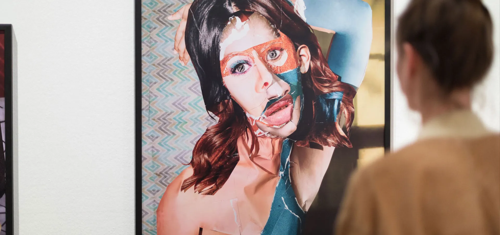Our mission
Foam is rooted in the need to make photography accessible for everyone. As a tool that has the potential to connect and encourage dialogue, we serve as a platform for conversation, contemplation and connection with visual culture and the world around us.
With a critical and open approach, we want to confront and challenge the role of photography. Our series of activities, including exhibitions, publications, debates, and educational programmes, continue to lead us in new ways as we showcase exceptional photography that can question and inspire everyone.
Foam & talent
our talent initiatives→- 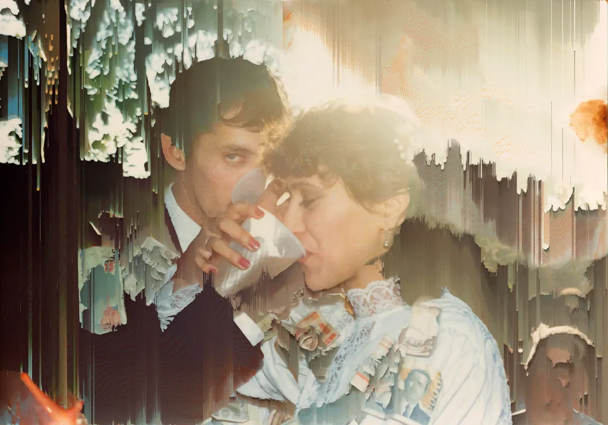 Wedding day from the series Las Flores mueren dos veces, 2022
- 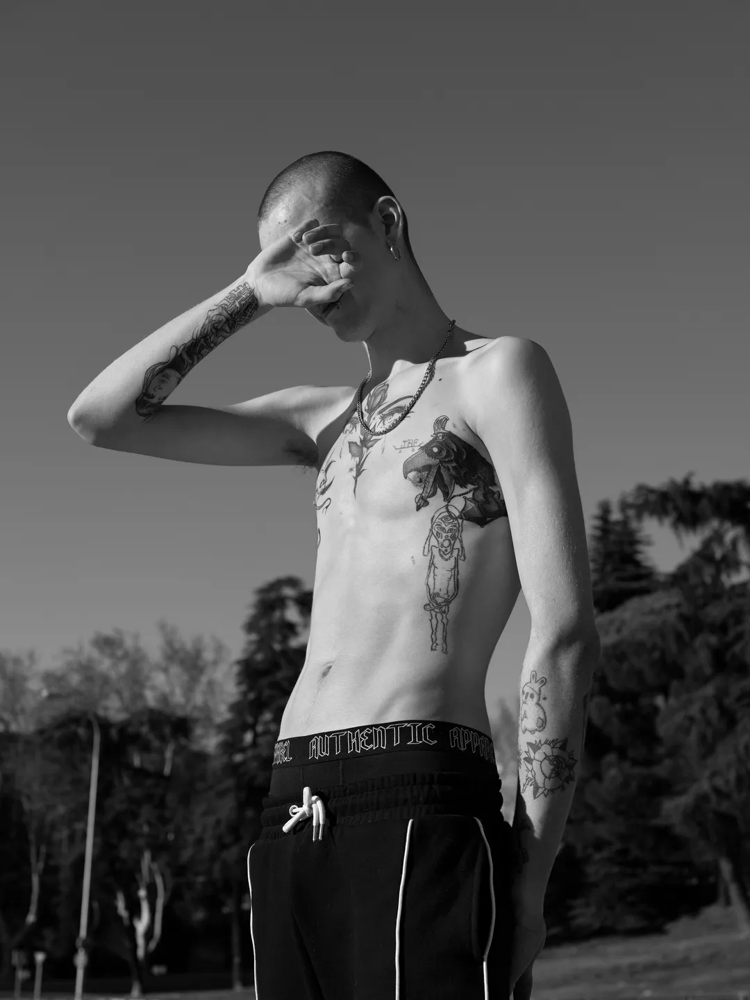Bebe Blanco Agterberg, 2020
- 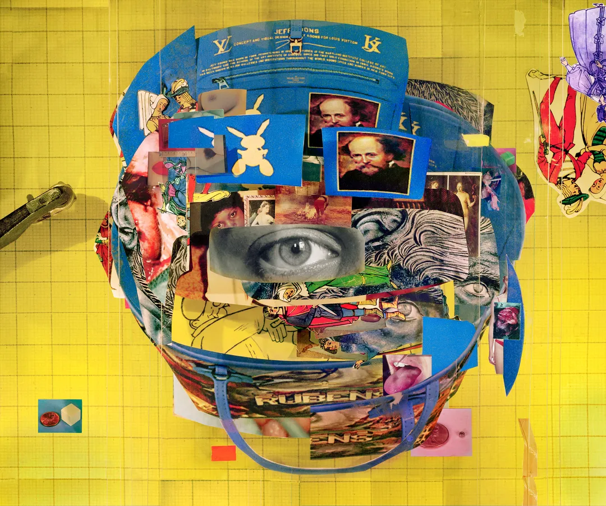Louis Vuitton Jeff Koons Rubens Bag, 2020
- 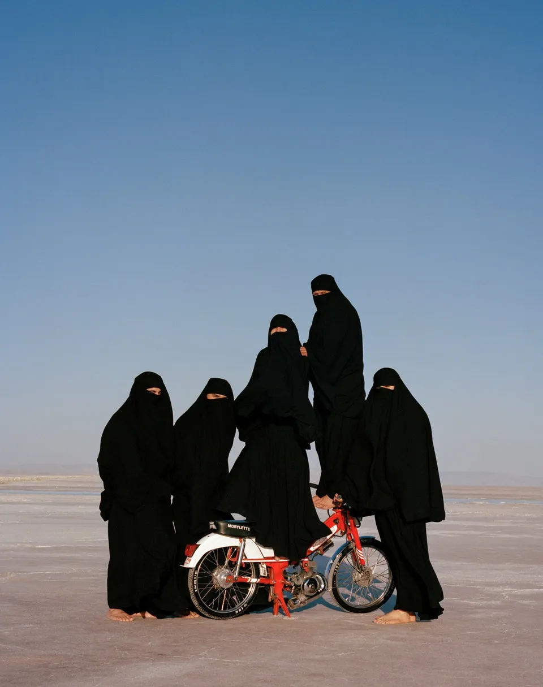From the series Home Leaving One for Another
- 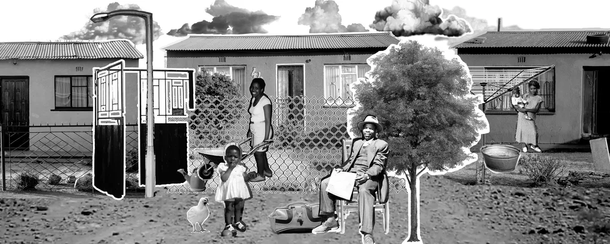"Mohlokomedi wa Tora", Scene 2, 2018
- 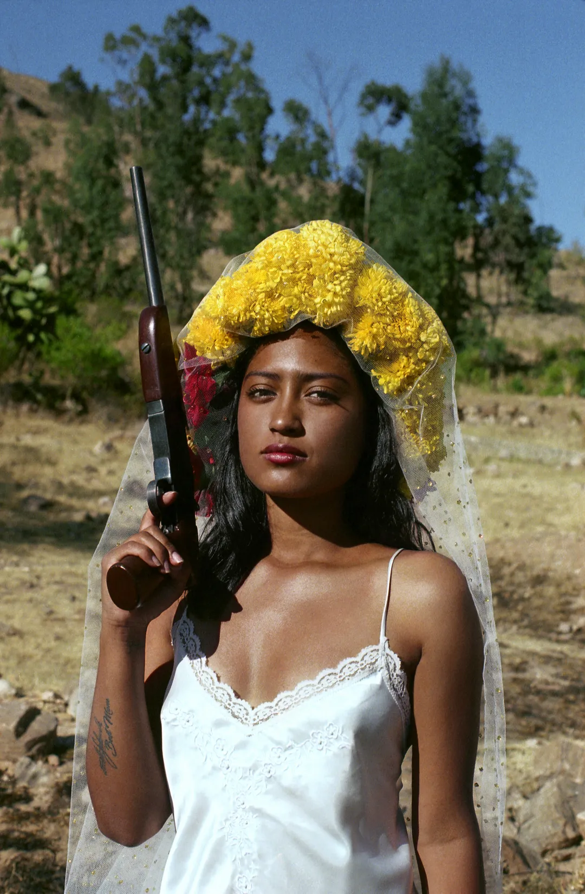Killa from the series Madre
- 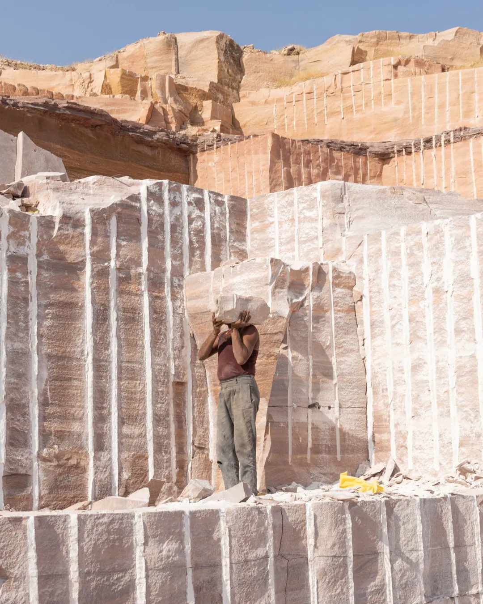In a sandstone mine 1 from the series This isn't Divide and Conquer
 dialect, 2020
dialect, 2020- 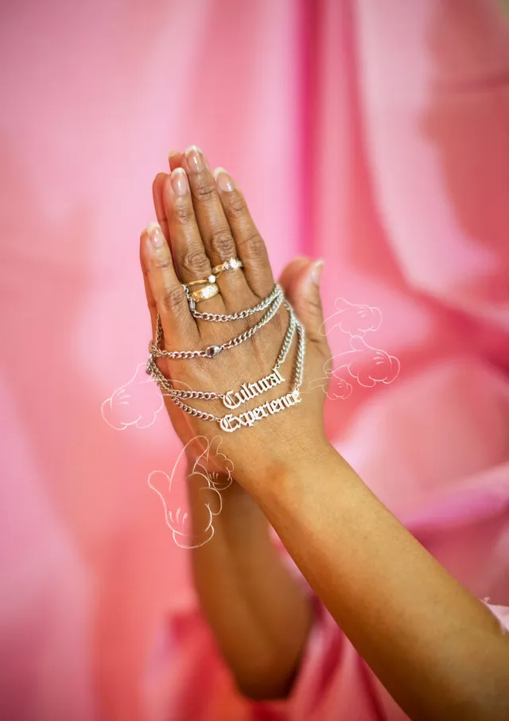authenticity (2 CHAINZ) from the series BLACK SNAFU, 2022
- 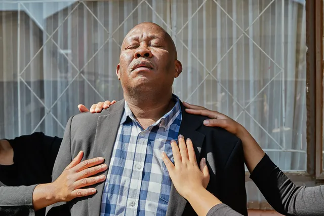Wait from the series We Didn't Choose to be Born Here, 2022
Exhibitions & activities
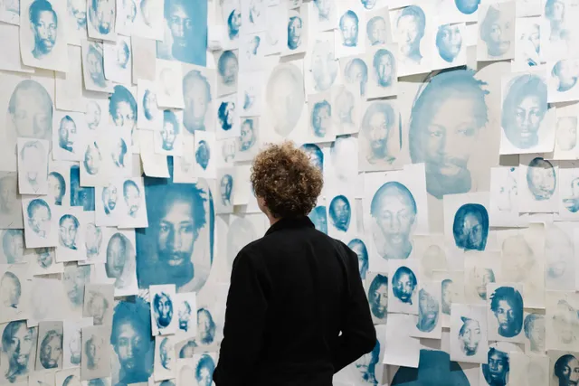
our programma & events →
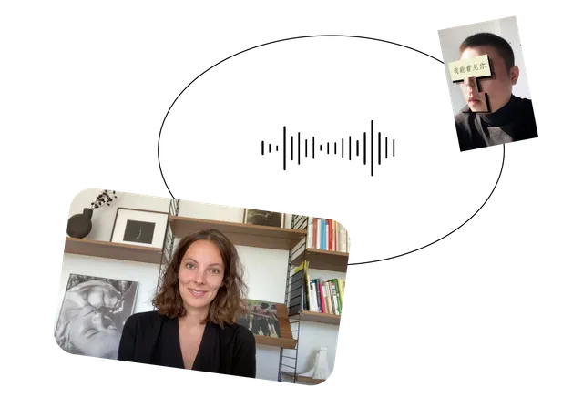
explore online activities →
our programma & events →
explore online activities →
Foam Magazine
Foam Magazine is an international photography magazine published twice a year. It serves as a platform for all kinds of photography: from documentary to fashion and contemporary to historic, curated around a specific theme.
more about the magazine →
Spaces
Our museum located on the Keizersgracht in Amsterdam hosts up to four exhibitions at the same time that present a wide range of photography. Alongside our exhibitions, Foam presents more spaces to keep you inspired.
visit the museum → 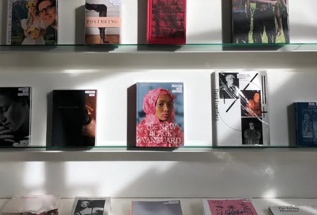 Foam Bookshop → 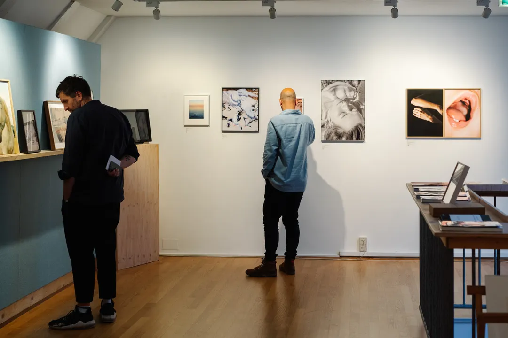 Foam Editions gallery → 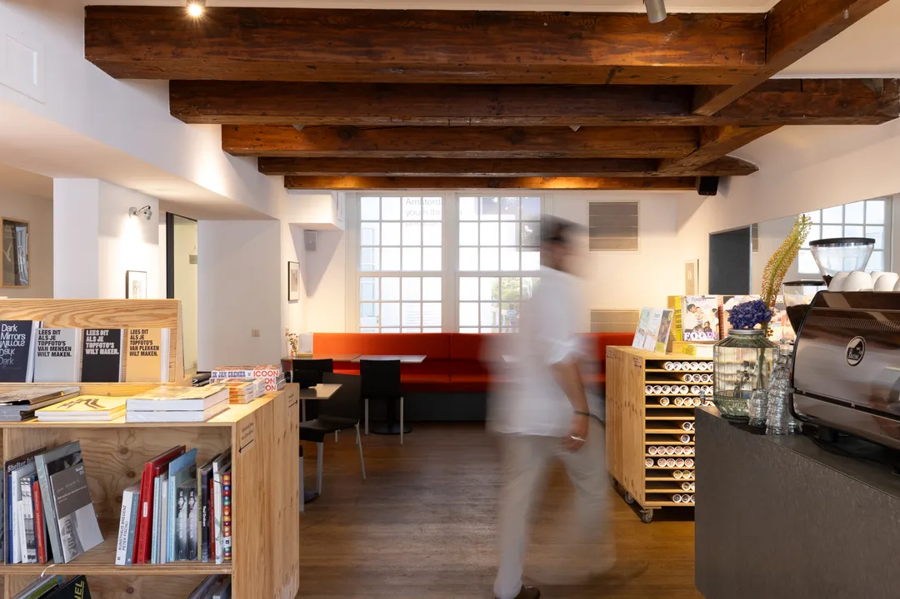 Foam Cafe →Discover even more
Ways to support Foam
With your contribution, you’ll support Foam’s vision and will enjoy special benefits as a thank you.
learn more →